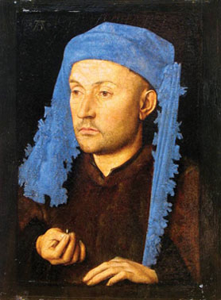
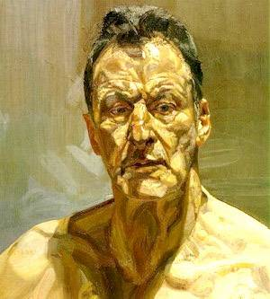

Physique

Divers :
Musique

Un petit musée virtuel.

Jan van Eyck :
L'homme au chapeau bleu (1430)

Rogier van der Weyden :
Portrait de femme (1455)
Jérôme Bosch :
Portement de croix (1508)
Breughel l'Ancien :
Tour de Babel (1563)
Nicolas Poussin :
L'enlèvement des Sabines (1637)

Antoine Watteau :
Pierrot (1719)

Canaletto :
Piazza San Marco (1730)

Jacques-Louis David :
Les sabines (1799)

Ingres :
Œdipe et le sphinx (1808)
Jacques-Louis David :
Femmes d’Alger (1834)

Vincent Van Gogh :
Terrasse
du café le soir (1888)
Gustav Klimt :
Le baiser (1907)

Piet Mondrian :
Pier and ocean
(1915)
Wassily Kandinsky :
Composition VIII (1923)

Joan Miro :
Le Port (1945)
Salvador Dali :
Nature
morte vivante (1956)

Francis Bacon :
Autoportrait (1971)

Lucian Freud :
Autoportrait (1985)

Jan Fabre :
Leda ou l'Ange de la mort (2005)